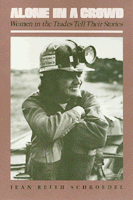

25 women tell us in their own words what it is like to be a woman in a male-dominated occupation
25 women tell us in their own words what it is like to be a woman in a male-dominated occupation


 25 women tell us in their own words what it is like to be a woman in a male-dominated occupation
25 women tell us in their own words what it is like to be a woman in a male-dominated occupation

|  |
Alone in a CrowdWomen in the Trades Tell Their StoriesJean Reith Schroedelpaper EAN: 978-0-87722-397-9 (ISBN: 0-87722-397-1) |
"[R]ich and earthy interviews juxtapose issues of independence and self esteem against attempts to maintain family life."
—New York Times Book Review
The problems of pipefitting and pregnancy, carpentry and child care, truck driving and femininity—these peculiar parings characterize the lives of an often unsung group of women. They are women who have entered the traditionally male-dominated world of the trades. They are women whom we meet in Alone in a Crowd, as twenty-five women who are blue-collar workers tell us in their own words what it is like to be a woman and a machinist or an electrician or a tugboat mate. Here are women who wear lipstick on the line and women who wear steel-toed boots in the yard, women who trade sexual wisecracks with their male coworkers and women who keep to themselves, women who want to get ahead and women who want out. In this book their actual voices speak to us about their nontraditional work and their nontraditional lives.
"When I’m in a fire camp," says fire fighter Diana Clarke, "I look around and try to find a woman who’s forty years old or thirty-five or fifty, like all the men I see. I’ve never seen her I realize the role model has to be myself." These are women who, whether they like it or not, are ground breakers; they must contend with condescension and hostility on the job, and perhaps at home, just because they are women; they must cope with policies and facilities not designed for women; they must develop job skills without teachers, self-concepts without role models. For some, like sailor Theresa Selfe, the strain is too much: "There is no place out there for intelligent, sensitive people, much less women who give a damn about themselves." Others, like steel hauler Mary Rathke, love their work: "I always thought that once I approached forty, I’d look pretty ridiculous in a semi. But the closer I get to forty, the more I think I'll change that to fifty."
In these pages, the author has collected the first-hand accounts of women who have formed very personal techniques of dealing with the conflict between being a woman and being "one of the guys." For them, work in the trades is a way to avoid conventional office jobs or to make more money than in traditional work. To gillnetter Sylvia Lange, her trade is her lifestyle; to truck assembly line worker Nora Qualy, it is a necessary evil, a way to support her family.
Young, middle-aged, or retired; college-educated or high school dropout; rebellious or conservative; gay or straight; black, white, Japanese-American, Mexican-American, or Native-American—the women in Alone in a Crowd share openly with us their unique experiences.
Jean Reith Schroedel has worked as a bus driver, a machinist, a clerical worker, a garment worker, a waitress, and a grocery store "boxboy." She has held several offices with the International Association of Machinists, Local 79, Kenworth Truck Company, and is now studying for her Ph.D. in Political Science at MIT.
Women's Studies
Labor Studies and Work
Women in the Political Economy, edited by Ronnie J. Steinberg.
No longer active.
Women in the Political Economy, edited by Ronnie J. Steinberg, includes books on women and issues of work, family, social movements, politics, feminism, and empowerment. It emphasizes women's roles in society and the social construction of gender and also explores current policy issues like comparable worth, international development, job training, and parental leave.
© 2015 Temple University. All Rights Reserved. This page: http://www.temple.edu/tempress/titles/366_reg.html.